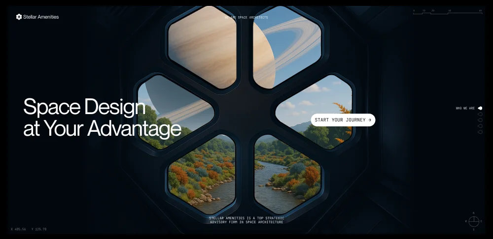

01 · CUPOLA OBSERVATORY SYSTEM
Space Design
Space Design
at Your Advantage
Stellar Amenities is a top strategic advisory firm in space architecture, pairing multi-layered fused-silica cupola geometry with autonomous radiation shielding.